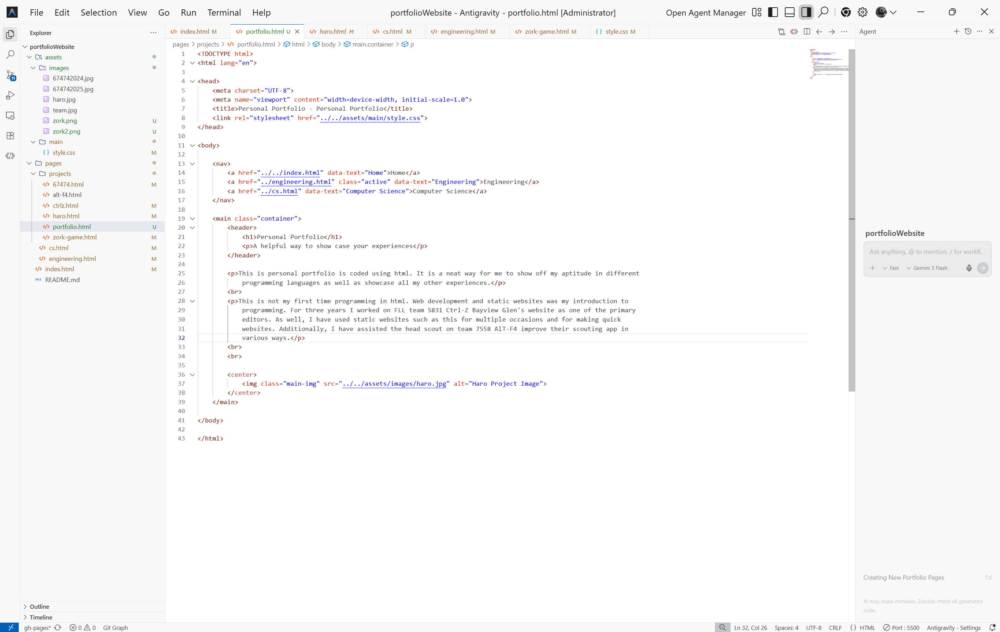

Personal Portfolio
A helpful way to showcase your experiences
This personal portfolio is coded using HTML. It is a neat way for me to show off my aptitude in different programming languages as well as showcase all my other experiences.
This is not my first time programming in HTML. Web development and static websites were my introduction to programming. For three years I worked on FLL team 5831 Ctrl-Z Bayview Glen's website as one of the primary editors. As well, I have used static websites such as this for multiple occasions and for making quick websites. Additionally, I have assisted the head scout on team 7558 AlT-F4 improve their scouting app in various ways.
GitHub Repository
